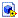
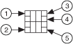
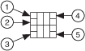

Creating a Member VI in a LabVIEW Class or Interface
Create a member VI to define an operation that a class or interface can perform. Member VIs are privileged to call other methods in private or protected scope. Class member VIs are privileged to access the class private data. You can create a member VI in several ways.
Creating a Member VI from a Blank VI
Complete the following steps to create a member VI from a blank VI.
Create a new LabVIEW class or interface or open an existing class or interface by selecting File»Open and navigating to the class or interface you want to open.
Note If you open the class or interface using File»Open, the class or interface opens in a class window instead of the Project Explorer window. You can develop the class or interface in the class window just like you do in the Project Explorer window.
In the Project Explorer window, right-click the project item for the class or interface in which you want to create a member VI and select New»VI from the shortcut menu.
A new member VI  appears in the Project Explorer window, and LabVIEW opens the VI.
You now can develop the member VI to define an operation that a class or interface can perform.
(Class Only) Creating a Member VI in a Property Definition Folder
If you create a member VI in a property definition folder, the private data of a LabVIEW class becomes a property of the class that you can access using a Property Node.
Note The name that you specify for the property definition folder determines the property name that appears on the Property Node. To modify the property name, you must rename the corresponding property definition folder. Renaming the private data does not modify the property name that appears on the Property Node.
Complete the following steps to create a member VI in a property definition folder.
Create a new LabVIEW class or open an existing class by selecting File»Open and navigating to the class you want to open.
Note If you open the class using File»Open, the class opens in a class window instead of the Project Explorer window. You can develop the class in the class window just like you do in the Project Explorer window.
In the Project Explorer window, right-click the icon for the class in which you want to create a member VI and select New»Property Definition Folder from the shortcut menu.
A new property definition folder appears in the Project Explorer window.
A new member VI appears in the Project Explorer window, and LabVIEW opens the VI.
Note You also can add existing member VIs to the property definition folder by right-clicking the property definition folder and selecting Add»File from the shortcut menu.
You now can develop the member VI to access and interact with the private data of the class. Each property definition folder can contain one VI to read and/or one VI to write the private data of the class.
Note If you use a Property Node to access a LabVIEW class, you can quickly view the implementation of a LabVIEW class property by right-clicking the class property and selecting Open Accessor VI from the shortcut menu. This option appears only if you wire a LabVIEW class or a data value reference that points to a LabVIEW class to the reference input of the Property Node and the block diagram of the accessor VI is available. If the property is dynamic with more than one implementation, selecting this option displays the Choose Implementation dialog box. Use this dialog box to view all implementations of the property, or dynamic dispatch member VI, and open one or more implementations.
Member VIs that enable you to read or write private data using a Property Node must have a 4 × 2 × 2 × 4 connector pane pattern. The terminals of a member VI that reads private data must have the following connector pane terminals.

1 Class In
3 Class Out
5 Error Out
2 Error In
4 Value Out
The terminals of a member VI that write private data must have the following connector pane terminals.

1 Class In
3 Error In
5 Error Out
2 Value In
4 Class Out
NoteClass In and Class Out of a member VI must be the same LabVIEW class. If a property definition folder contains both a read and write member VI, Value Out of the read VI and Value In of the write VI must be the same data type.
Creating a Member VI from the Dynamic Dispatch Template
You can use any VI template to create a new member VI using the New dialog box; however, LabVIEW provides a quick shortcut to creating a dynamic dispatch member VI that includes several features that many dynamic methods need. LabVIEW populates the new member VI with error in and error out clusters, a Case structure for error handling, the input class or interface, and the output class or interface. LabVIEW sets both the input and output terminals as dynamic on the connector pane of the VI. Complete the following steps to create a member VI from a dynamic dispatch template.
Create a new LabVIEW class or interface or open an existing class or interface by selecting File»Open and navigating to the class or interface you want to open.
Note If you open the class or interface using File»Open, the class or interface opens in a class window instead of the Project Explorer window. You can develop the class or interface in the class window just like you do in the Project Explorer window.
In the Project Explorer window, right-click the project item for the class or interface in which you want to create a member VI and select New»VI from Dynamic Dispatch Template from the shortcut menu.
A new VI appears in the Project Explorer window, and LabVIEW opens the VI. The front panel of the VI displays a class or interface indicator, a class or interface control, and error in and error out clusters.
Press the <Ctrl–E> keys to display the block diagram. (macOS) Press the <Option–E> keys. (Linux) Press the <Alt–E> keys. The block diagram displays two class or interface terminals, error in and error out cluster terminals, and a Case structure for error handling.
You now can develop the member VI to access and interact with the private data of the class.
Creating a Member VI from the Static Dispatch Template
LabVIEW also provides a quick shortcut to creating a static dispatch member VI. LabVIEW populates the new member VI with error in and error out clusters, a Case structure for error handling, the input class or interface, and the output class or interface. Contrary to creating a dynamic dispatch VI, LabVIEW does not set the input and output terminals as dynamic on the connector pane of the static dispatch VI. Complete the following steps to create a member VI from a static dispatch template.
Create a new LabVIEW class or interface or open an existing class or interface by selecting File»Open and navigating to the class or interface you want to open.
Note If you open the class or interface using File»Open, the class or interface opens in a class window instead of the Project Explorer window. You can develop the class or interface in the class window just like you do in the Project Explorer window.
In the Project Explorer window, right-click the project item for the class or interface in which you want to create a member VI and select New»VI from Static Dispatch Template from the shortcut menu.
A new VI appears in the Project Explorer window, and LabVIEW opens the VI. The front panel of the VI displays a class or interface indicator, a class or interface control, and error in and error out clusters.
Press the <Ctrl-E> keys to display the block diagram. (macOS) Press the <Option–E> keys. (Linux) Press the <Alt–E> keys. The block diagram displays two class or interface terminals, error in and error out cluster terminals, and a Case structure for error handling.
You now can develop the member VI to access and interact with the private data of the class.
(Class Only) Creating a Member VI for Accessing Data Members
You can quickly create a read or write accessor VI that is a member of the LabVIEW class. The read accessor VI unbundles LabVIEW class data so you can access the data in a calling VI. The write accessor VI rebundles new values for class data that you pass from the calling VI. You might use an accessor VI to read from or write to class data in VIs that are not members of the LabVIEW class. Complete the following steps to create a VI to access data of the class.
Create a new LabVIEW class or open an existing class by selecting File»Open and navigating to the class you want to open.
Note If you open the class using File»Open, the class opens in a class window instead of the Project Explorer window. You can develop the class in the class window just like you do in the Project Explorer window.
In the Project Explorer window, right-click the icon for the class in which you want to create a member VI and select New»VI for Data Member Access from the shortcut menu to display the Create Accessor dialog box. You also can right-click a data member in the private data control of the LabVIEW class and select Create Accessor from the shortcut menu.
Note You must save a new LabVIEW class before using this option. LabVIEW dims the VI for Data Member Access and Create Accessor options if you have not saved the new class.
Select the data member you want to access, the type of access, whether the new VI is dynamic or static, and whether you can access the data member using a Property Node. If you specify that the selected data member is accessible through a Property Node, LabVIEW adds the member VI to a property definition folder.
Note You can quickly view the implementation of a LabVIEW class property if you use a Property Node to access a LabVIEW class and specify that the selected data member is accessible through a Property Node. Right-click the class property and select Open Accessor VI from the shortcut menu. This option appears only if you wire a LabVIEW class or a data value reference that points to a LabVIEW class to the reference input of the Property Node and the block diagram of the accessor VI is available. If the property is dynamic with more than one implementation, selecting this option displays the Choose Implementation dialog box. Use this dialog box to view all implementations of the property, or dynamic dispatch member VI, and open one or more implementations.
If you press the <Ctrl> key and select more than one data member, LabVIEW creates an accessor VI for each data member. (macOS) Press the <Option> key. (Linux) Press the <Alt> key. If you select Read and Write in the dialog box, LabVIEW creates an accessor VI that provides read access and another accessor VI that provides write access.
Click the Create button to create the accessor VI or VIs.
A new VI appears in the Project Explorer window for each data member and each type of access you select, and LabVIEW opens each VI automatically. The names of the VIs consist of the access type you chose and the name of the data member, for example, Read Numeric.vi. The front panel of the VI displays a LabVIEW class indicator, a LabVIEW class control, the data member you chose, and error in and error out clusters.
Press the <Ctrl-E> keys to display the block diagram. (macOS) Press the <Option–E> keys. (Linux) Press the <Alt–E> keys. The block diagram displays two LabVIEW class terminals, the data member you chose, error in and error out cluster terminals, and a Case structure for error handling.
You now can manipulate the class data from calling VIs.
Creating a Member VI to Override an Ancestor Member VI
You can create a dynamic dispatch member VI that overrides, or extends, the functionality of an ancestor dynamic dispatch member VI. A member VI can override a member VI from an ancestor class or interface only if the following settings are the same for both VIs:
LabVIEW creates an override member VI that meets all of the requirements of a legal override if you select New»VI for Override from the shortcut menu. Complete the following steps to create an override member VI using the New»VI for Override option.
Create a new LabVIEW class or interface or open an existing class or interface by selecting File»Open and navigating to the class or interface you want to open. If you are creating a new class or interface , you must save the class or interface before you can create an override member VI for it.
Note If you open the class using File»Open, the class opens in a class window instead of the Project Explorer window. You can develop the class in the class window just like you do in the Project Explorer window.
In the Project Explorer window, right-click the project item for the class or interface in which you want to create a member VI and select New»VI for Override from the shortcut menu.
Note LabVIEW dims the VI for Override option if the class or interface you select does not inherit member VIs that are available for you to override. The VIs in the ancestor class or interface must be dynamic dispatch member VIs in order for you to override them.
The New Override dialog box appears. The dialog box displays dynamic methods that ancestor classes or interfaces define. Select the member VI you want to override.
Click the OK button.
A new VI appears in the Project Explorer window, and LabVIEW opens the VI. LabVIEW uses the ancestor VI icon and overlays the icon mask of the child class or interface to create the icon of the new VI. Additionally, the front panel of the VI displays the controls and indicators copied from the ancestor VI, LabVIEW class indicators, and error in and error out clusters.
Press the <Ctrl-E> keys to display the block diagram. (macOS) Press the <Option–E> keys. (Linux) Press the <Alt–E> keys. The block diagram displays terminals that LabVIEW copied from the ancestor member VI. LabVIEW also wires the terminals to a Call Parent Class Method node automatically.
You now can change the code on the block diagram of the override member VI as you need.
Note A newly created override member VI initially behaves exactly as the ancestor implementation of the member VI. You can use an override member VI to add or subtract functionality from a parent implementation of a member VI.
Creating a Member VI That Requires Override VIs in Descendant Classes or Interfaces
You can create a dynamic dispatch VI that requires descendant classes or interfaces to override, or extend, the functionality of that member VI. If you require the descendants to override the ancestor member VI, the member VI does not have to provide any implementation of this VI for descendants. By default, interfaces require descendants to override member VIs, whereas classes do not require the descendants to override member VIs.
Complete the following steps to require descendants to override a member VI.
Create a new LabVIEW class or interface or open an existing class or interface by selecting File»Open and navigating to the class or interface you want to open.
Note If you open the class or interface using File»Open, the class or interface opens in a class window instead of the Project Explorer window. You can develop the class or interface in the class window just like you do in the Project Explorer window.
In the Project Explorer window, right-click the project item for the class or interface in which you want to create a member VI and select New»VI from Dynamic Dispatch Template from the shortcut menu.
A new VI appears in the Project Explorer window, and LabVIEW opens the VI. The front panel of the VI displays a class or interface indicator, a class or interface control, and error in and error out clusters.
In the Project Explorer window, right-click the project item for the class or interface in which you created a member VI and select Properties to display the Class/Interface Properties dialog box.
Select Item Settings to display the Item Settings page and select the dynamic dispatch VI you want descendants to override.
Place a checkmark in the Descendants must override checkbox. You now do not have to provide any implementation of this VI, because each descendant must override this VI with its own implementation.